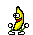

阿空 Kong
小時後老爸就常提醒我：「第一次打架之後一定會因為震憾而發抖。」但我到24歲了還是嫩到連筆戰都會這樣
2010-01-10 20:55:31
Responses :
latest
烈焰風痕影
說
意思是你爸有打架的經驗 = =？
Gavin
說
你爸有教你打架阿?
陽光追尋者 O先生
說
你不要生氣啦~
黑狗.
說
會嗎ˇˇ(還是我都是以大欺小所以沒感覺出來
KAZ
我連吵架都會發斗= =
裏 大寶/血夜 冥
我吵個架也會發抖0.0
自在的老K
說
我已經不會了
阿空 Kong
kerickuo
: 意識到自己在發抖時，好像有想到你XD
自在的老K
說
kong0107
: 啊啊啊啊？為什麼？
阿空 Kong
不知道 可能你是近期我看到不懼怕職場上直接衝突的人吧
自在的老K
說
咦？我覺得我還算血氣比較不方剛的了，至少我都是比較是在爭執一些道理而不太算逞一時之快。 o_O
真．阿宅一生-ENO.L
只要生氣.每次我都會全身抖不停
KAZ
我連聲音都會發抖= =
urshow
說

卡卡球
說
你跟我哥好像...我哥生氣的時候會全身發抖